For å kunne gjennomføre prosjektet kreves produkter som ikke svikter under kontinuerlig og hard bruk. Alle produktene vi bruker er vi helt avhengige av at fungerer som de skal, når de skal. Dette stiller store krav til de produktene og produsentene vi velger å stole på. Alle produktene, med noen få unntak, har jeg mye personlig erfaring med. Gjennom deltidsjobben på XXL og tidligere jobb i Sport 1-butikk, samt en etter hvert betydelig porsjon turerfaring, har jeg en viss oversikt over hva som finnes på markedet og hva som fungerer. Dermed er lite overlatt til tilfeldighetene hva angår valg av utstyr. Her er en liste over det viktigste utstyret:
KJØKKENHJØRNET
25-8 stormkjøkken
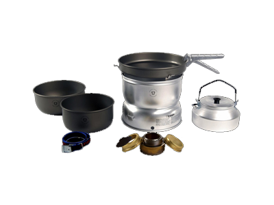
Optimus Nova+ brenner ladd med
parafin
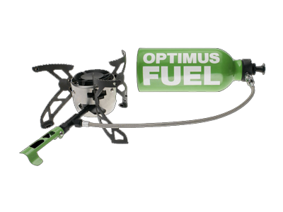
Trangia Trangia brenselsflaske 1L
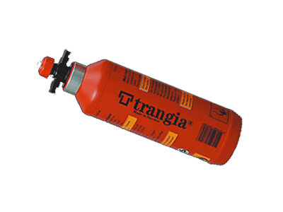
Sarek termos
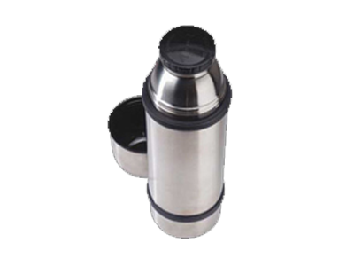
Tallrikslåda
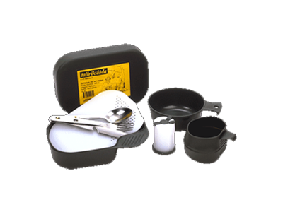
Quechua alu. drikkeflaske
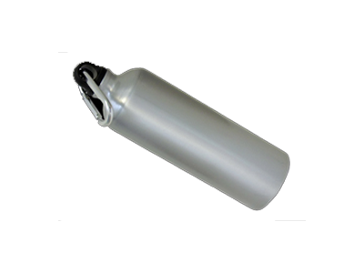
Nalgene Lexanflaske med
thermocover
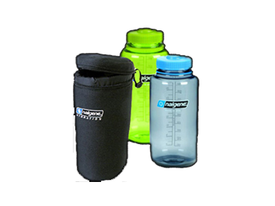
Pro Balaclava
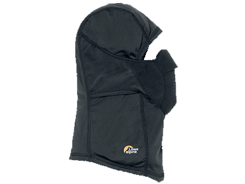
Norrøna Nansen Yttervotter
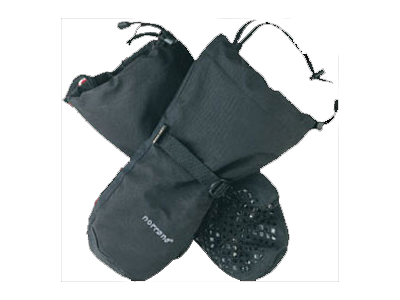
Innervotter Tovet (Irene Bakken)
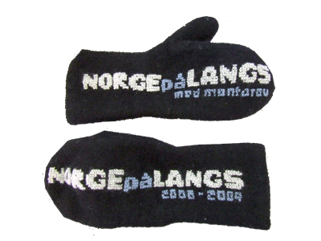
Pelslue av Bisam
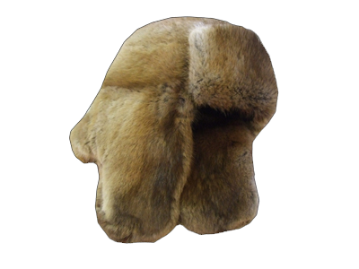
Helsport Fimbul Shell Jakke og Bukse
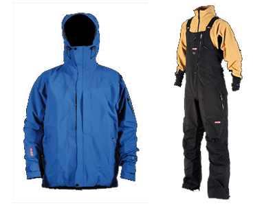
Helsport Fimbul Down Expedition
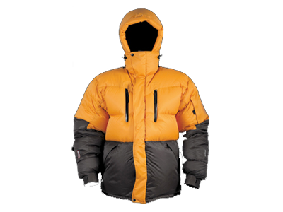
Norrøna Trollveggen Gore-Tex Gamasjer
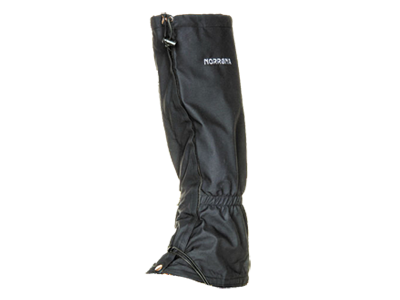
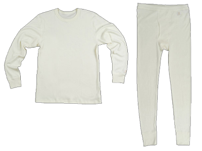
Janus IRIS
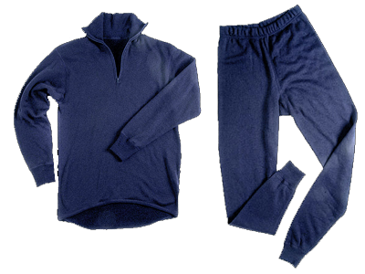
Janus Design Wool
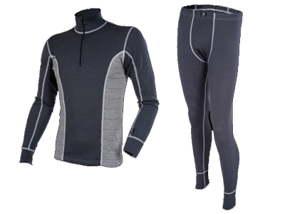
Janus balaclava
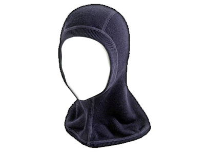
Janus hals
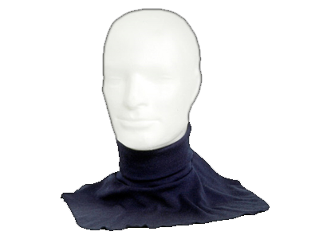
Janus sokker
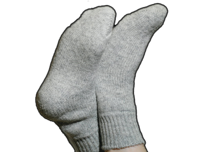
Sasta Ullsokker
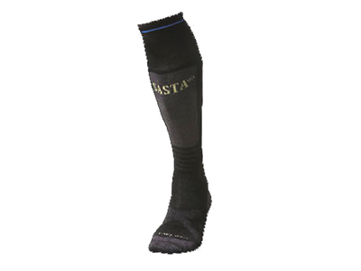
Aclima Woolnet trøye og
longs (netting)
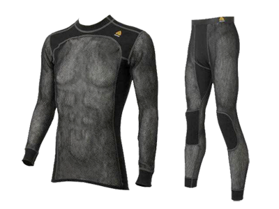
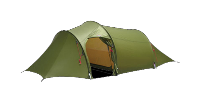
Helsport Svalbard (vinter)
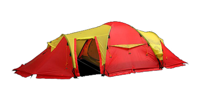
Ajungilak Future Winter
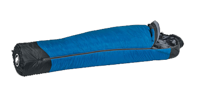
Ajungilak Tyin 5-season
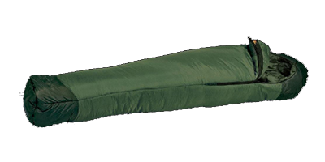
Bamse Extreme liggeunderlag
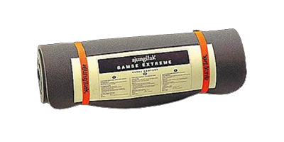
Therm-a-Rest Ridge Deluxe
liggeunderlag
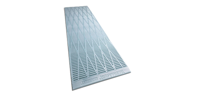
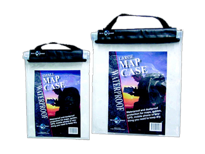
Sea to Summit Drybag 8L & 35L
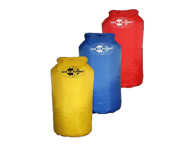
ALLY 16,5´ DR kano
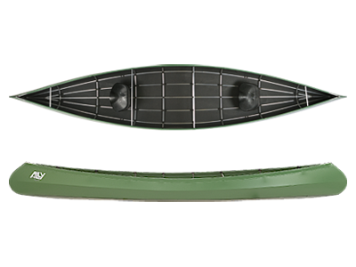
Silva Helios stormtenner
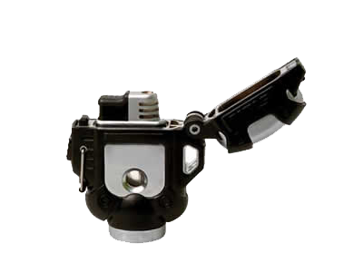
Ajungilak Bivouac Boots
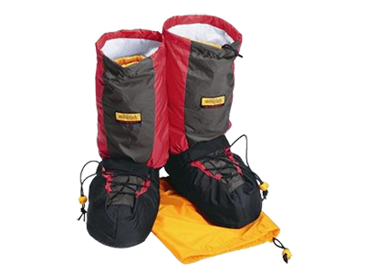
Rottefella Snøspade
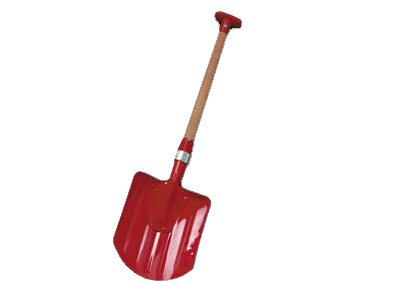
Ortovox 320 søkestang
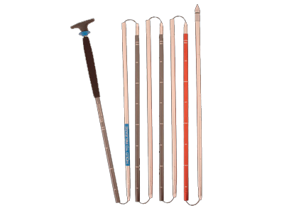
Adidas Evil Eye Explorer L
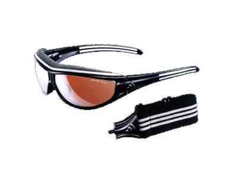
ID2 goggles
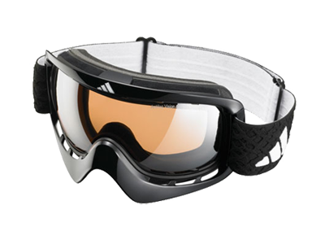
rammesekk
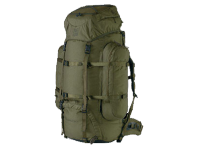
Alfa Bever Pro Grip+
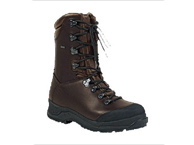
Buck Øks
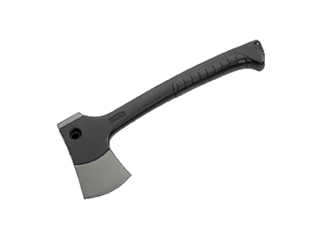
Buck diamantbryne
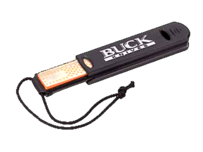
Helle Fjellkniven
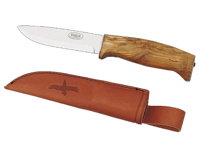
Petzl Tikka Plus hodelykt
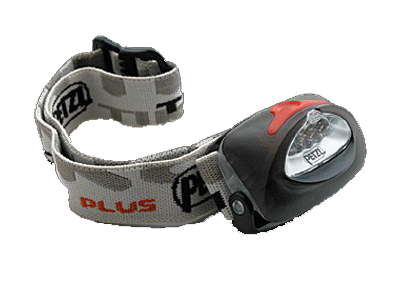
Silva Expedition 15 kompass
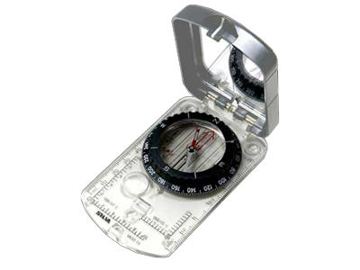
Kart: 1 : 50 000 (M711)
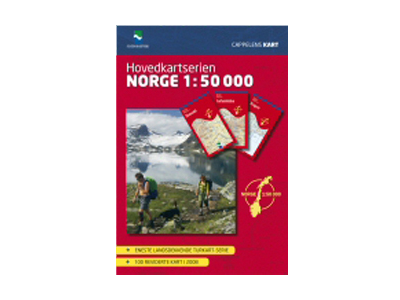
Fisker mest med spesialsluker (12 grams) eller mark
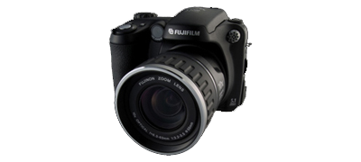
Canon MD110 DV-Kamera
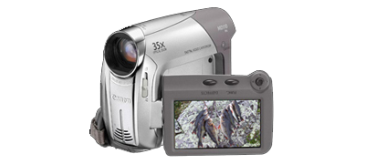
Magellan eXplorist 500 LE GPS

SILVA Solar II Solcelle
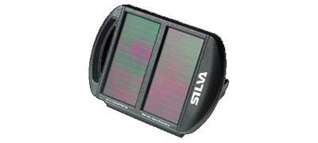
SPOT Satellite Personal Tracker
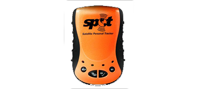
SKIUTSTYR
kortfellelås
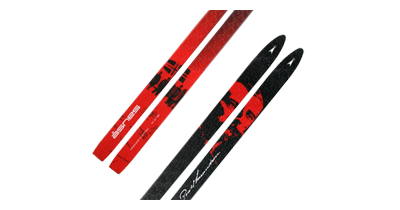
Crispi Sydpolen 75mm Skistøvler
Rottefella Super Telemark m/wire,
oppbygningsplater og hælløfter
Swix Extreme Composite skistaver
Åsnes Nansen 2-delt stav
(sammenleggbare reservestaver)
Fjellpulken Ekspedisjon 168 med
forsterket ekspedisjonsdrag og
ekspedisjonssele